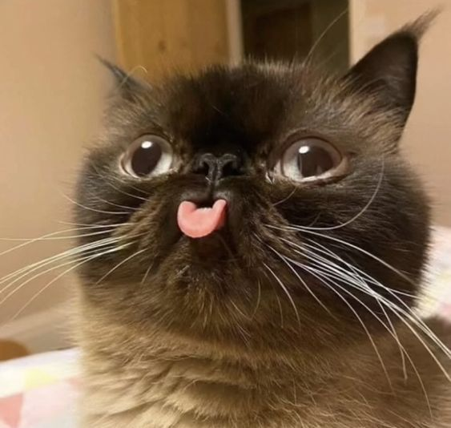

Кошки
Кошка — домашнее животное, одно из наиболее популярных (наряду с собаками) «животных-компаньонов» или домашних животных. Кошки — млекопитающие и плотоядные животные.
Охотники
За способность уничтожать грызунов люди ценят кошек около 10 000 тысяч лет. Являясь одиночным охотником на грызунов и других мелких животных, кошка — социальное животное, использующее для общения широкий диапазон звуковых сигналов, а также феромоны и движения тела.
Породы кошек
В настоящее время в мире насчитывается около 600 млн домашних кошек, выведено около 256 пород, от длинношерстных (персидская кошка) до лишённых шерсти (сфинксы), признанных и зарегистрированных различными фелинологическими организациями. Самая первая порода кошек появилась в Египте. Кошки распространены по всему миру.
Зоология кошек
С зоологической точки зрения, домашняя кошка — млекопитающее семейства кошачьих отряда хищных. Предположительно является подвидом лесной кошки (ранее считалась отдельным видом).
